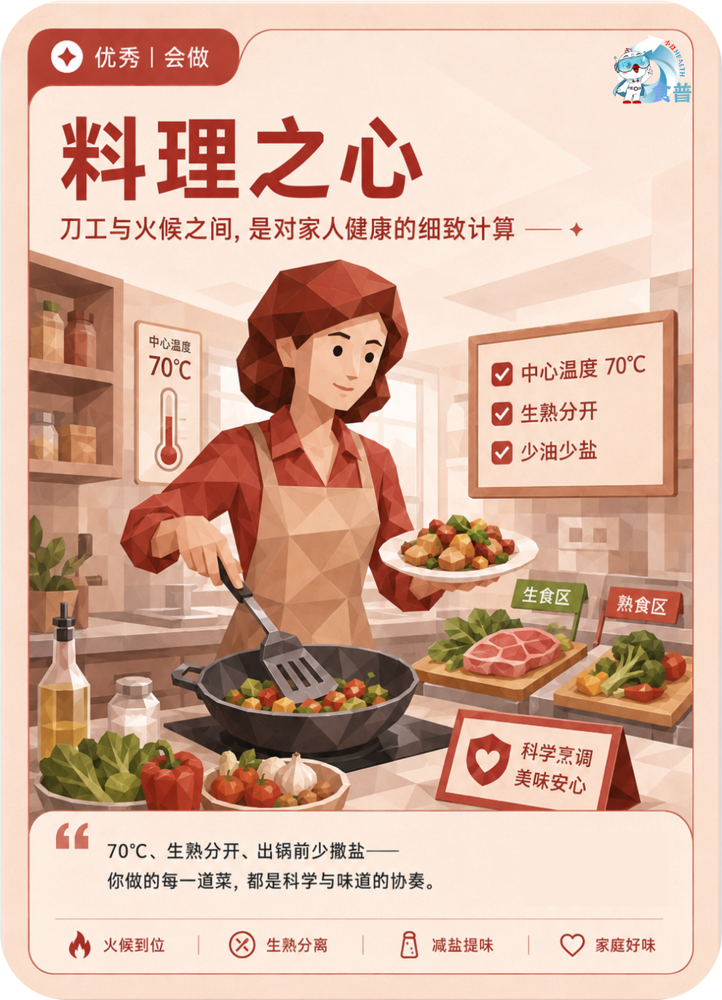

健康主理人
优秀
会做
F03
料理之心
刀工与火候之间,是对家人健康的细致计算
70℃、生熟分开、出锅前少撒盐——你做的每一道菜,都是科学与味道的协奏。
手机端可点击“打开原图”后长按图片保存；也可以直接长按上方图卡保存。

刀工与火候之间,是对家人健康的细致计算
70℃、生熟分开、出锅前少撒盐——你做的每一道菜,都是科学与味道的协奏。
手机端可点击“打开原图”后长按图片保存；也可以直接长按上方图卡保存。